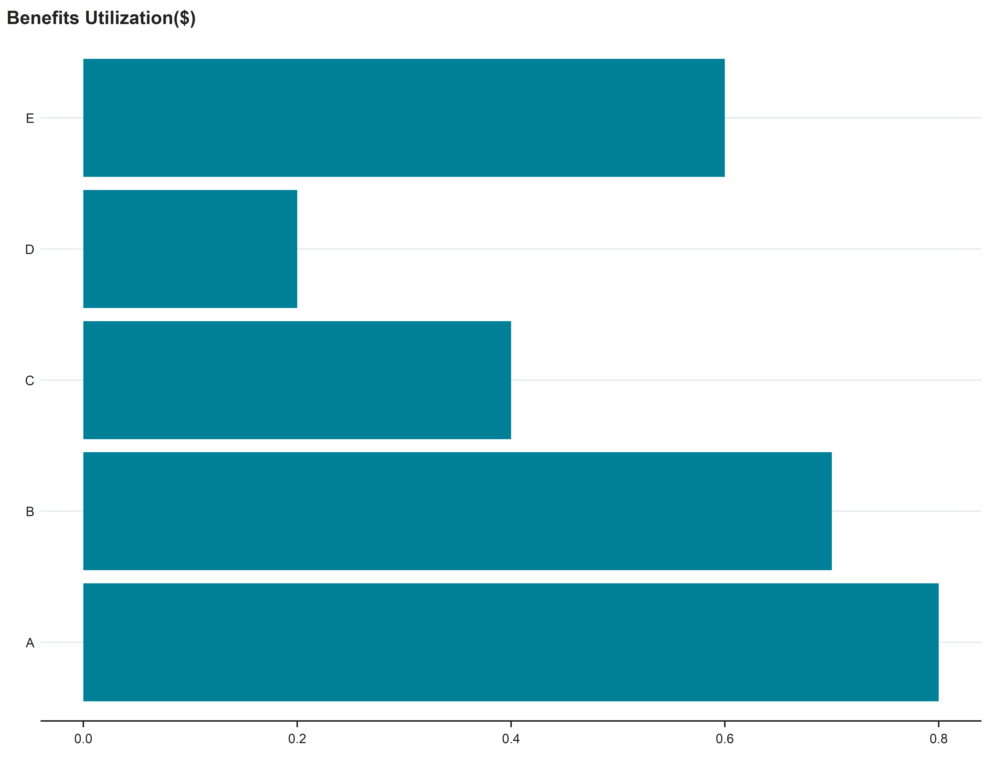
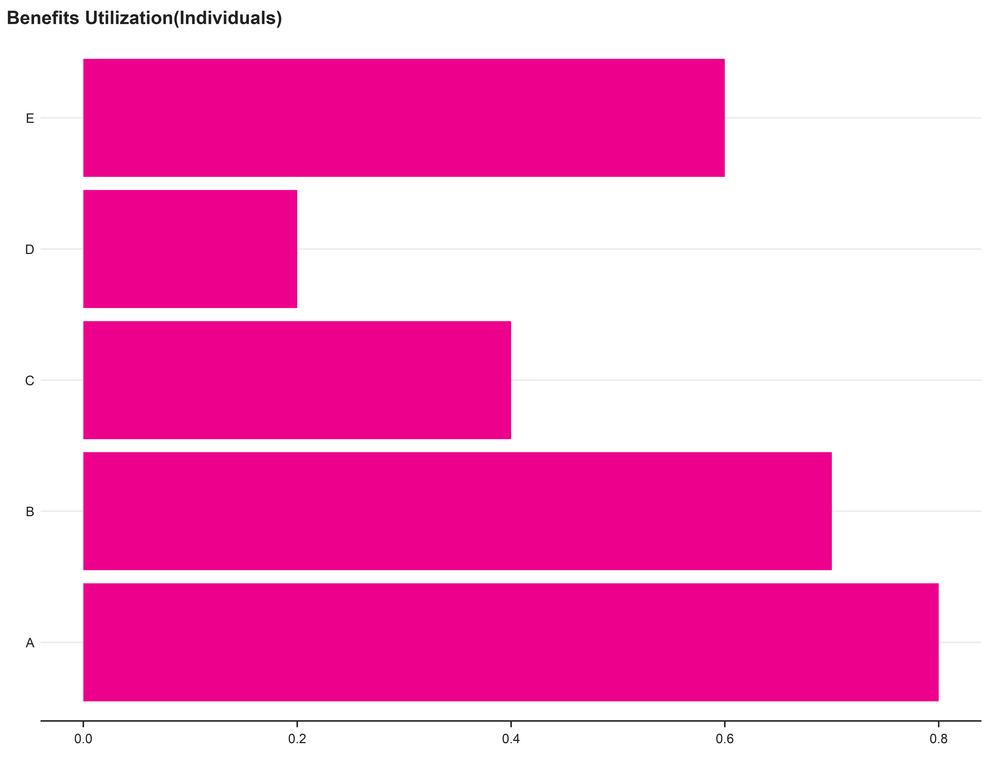
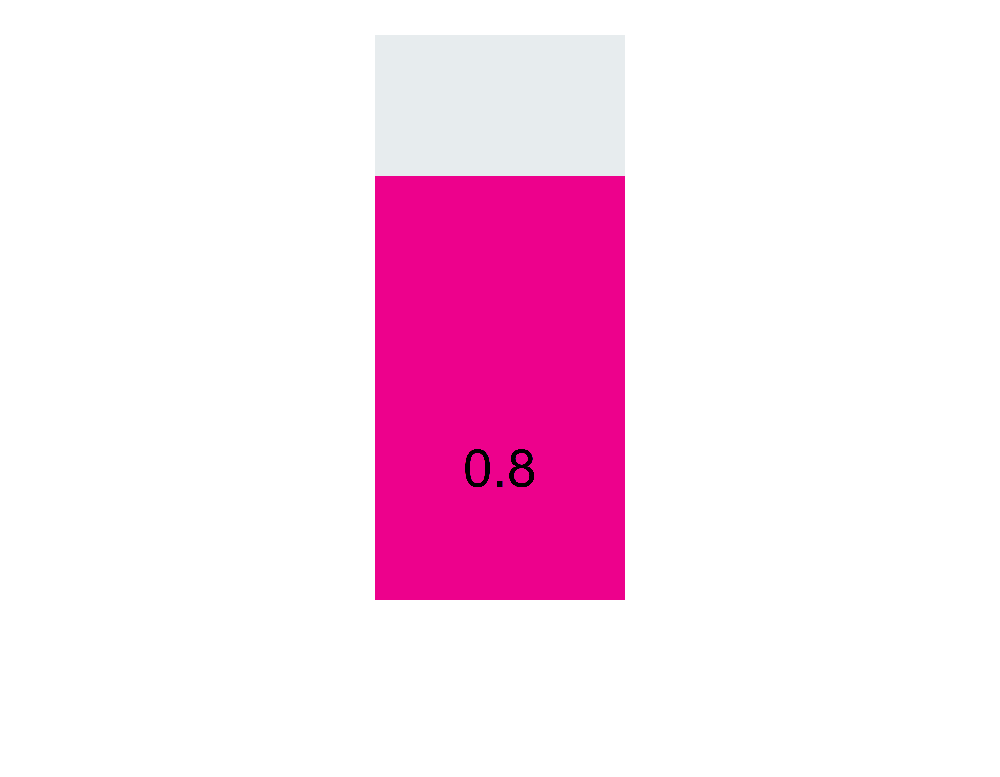
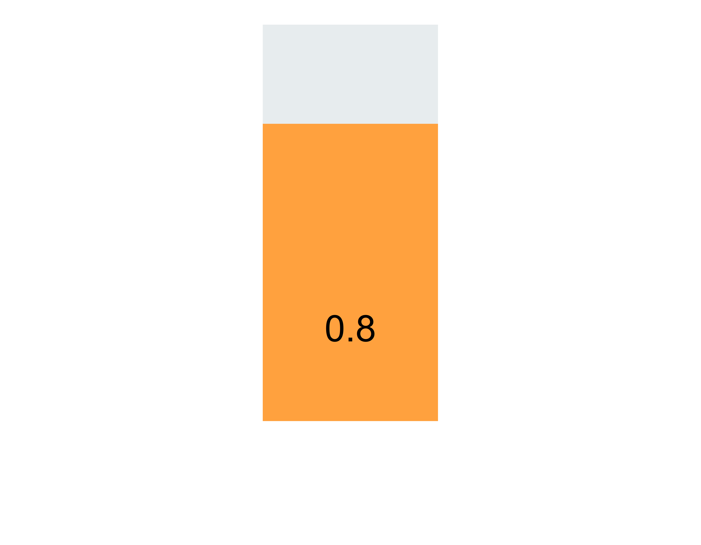

In Dallas County
123,123 potential eligible individuals are not enrolled in either EITC, SNAP, or WIC benefits, this constitutes 1 in 5 of all Dallas residents.
123,123 potential eligibles are children (11.1%), that's 1 in 3 of all children in Dallas County.
$123,123.00 untapped annually in EITC, SNAP, WIC benefits can be sent back into the Dallas economy.
What would Dallas look like if everyone eligible received their benefits?
Healthier Families
30% reduction in food insecurity
Here’s a sentence telling us why food insecurity is bad.
35% reduction in overall healthcare costs
This sentence tells us that individuals are less burdened because of healthcare costs.
18% increase in high school completion
Now I’m telling you why it’s important that higher high school completion rates leads to better social mobility.
Healthier Economy
$1,120,000 back into the Dallas County
Benefits to sales, property ownership, and income taxes.
$1.79 in economic activity
generated for every dollar in SNAP benefits.
13,560 new jobs
Are generated with additional $1B in SNAP benefits in the agriculture and transportation industries.

Here’s a header telling me what WIC is.
Only 12.3% of eligible participants receive WIC support in Dallas County. There is are additional 123,123 people eligible and $123,123 untapped annually.
Why this matters: WIC (Special Supplemental Nutrition Program for Women, Infants, and Children) are proven to improve children’s health outcome, reduce child malnutrition, and save an extra $1,863 in health care expenditures a year.

123,123
Eligible Participants
Eligible Participants
$456,456
Estimated Dollars Available
Estimated Dollars Available
123,123
Actual Participants
Actual Participants
$456,456
Dollars Allocated
Dollars Allocated
Here’s a header telling me what SNAP` is.
Only 12.3% of eligible participants receive WIC support in Dallas County. There is are additional 123,123 people eligible and $123,123 untapped annually.
Why this matters: WIC (Special Supplemental Nutrition Program for Women, Infants, and Children) are proven to improve children’s health outcome, reduce child malnutrition, and save an extra $1,863 in health care expenditures a year.

123,123
Eligible Participants
Eligible Participants
$456,456
Estimated Dollars Available
Estimated Dollars Available
123,123
Actual Participants
Actual Participants
$456,456
Dollars Allocated
Dollars Allocated
About CPAL
CPAL is a Dallas-based nonprofit organization committed to cutting child poverty in Dallas, Texas in half within a generation by (1) generating relevant data insights to break big problems into small, actionable ones, (2) facilitating cross-sector, collective action based on data insights, and (3) applying principles of human-centered design to solve problems in partnership with communities. One of CPAL’s five areas of focus is housing, and CPAL’s long-term aspiration is to ensure all Dallas families have access to stable housing without worry of an involuntary move.